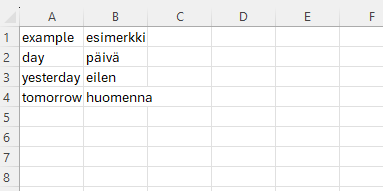
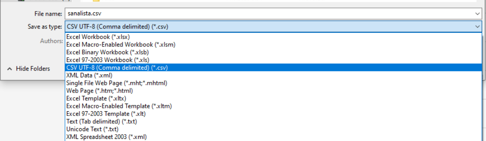
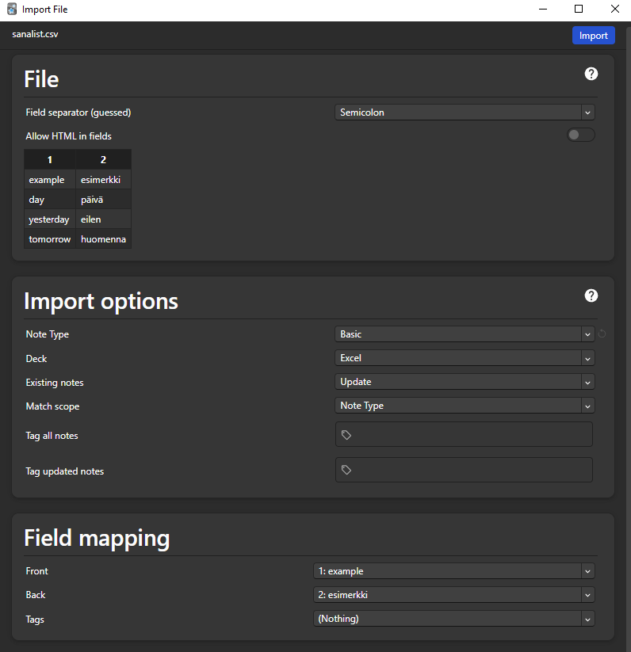
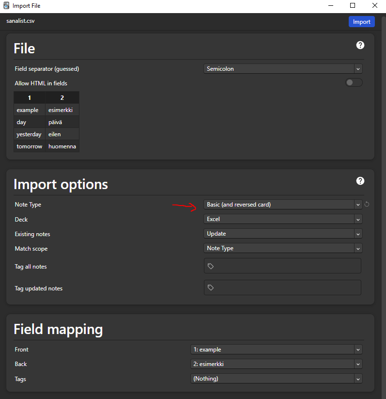

Kappale 2 Tyypillinen sanalista Ankiin
Varsinkin tavallisten sanastojen automaattinen konvertoiminen Anki-korteiksi on todella helppoa.

2.1 Vaihe 1
Tallenna tiedosto .csv-tiedostona
- Huomio! Tiedosto kannattaa tallentaa csv UTF-8 (Comma delimited) -versiona, jotta sen importointi Ankiin onnistuu (varsinkin ääkköset vaativat tämän formaatin)

2.3 Vaihe 3
Muokkaa importointiasetuksia
- Jos haluat vain tyypilliseen tapaan kortteja, joissa etupuolella on opiskeltava sana, niin voi tehdä tällä tavalla

Jos haluat tehdä lisäksi kortteja, joiden etupuolella on tuntemasi kieli ja takapuolella opiskeltava sana, niin voi tehdä näin

Sitten voi importoida ja olet valmis.